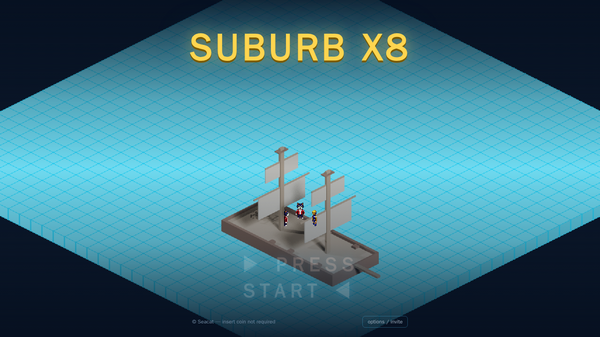
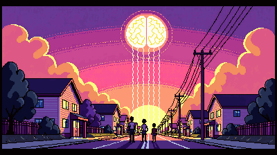
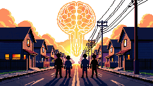
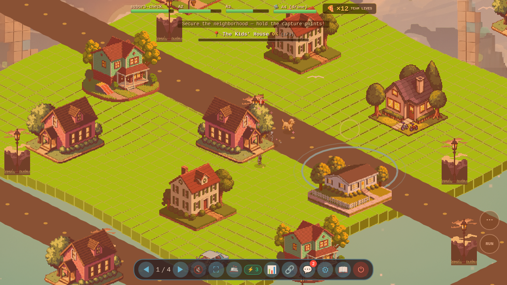
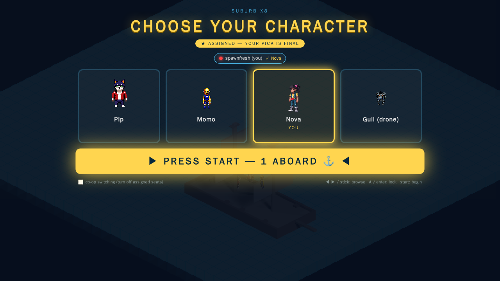
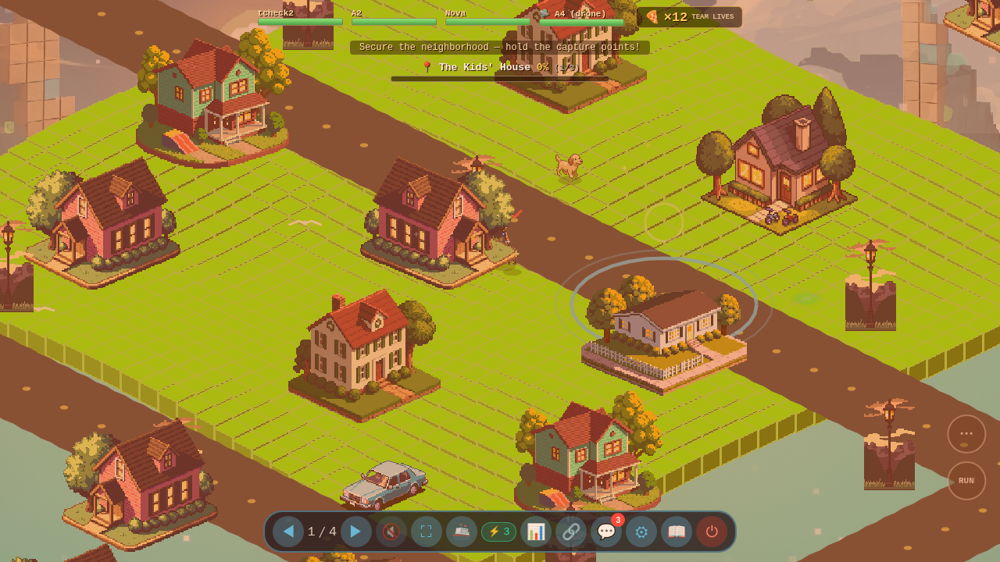

The Good, the Bad, and the Ugly: Claude Fable 5
I have a game called seacat. It is a multiplayer seafaring cat game, which is exactly as serious a project as it sounds. I also have a new shiny model to play with — Claude Fable 5 — and a deeply irresponsible amount of curiosity.
So I did the natural thing: I wrote up an ambitious four-phase campaign spec, handed it to a fleet of AI agents, and went to sleep.
The campaign:
- Phase 1 — A suburban neighborhood. Hold down points, fend off the invasion.
- Phase 2 — Sail to an island. Boss battle.
- Phase 3 — A cloud platforming stage, because why not.
- Phase 4 — Space. Final boss. Roll credits.

The setup, or: I built a tiny navy
The architecture is sillier than the game. There's a top-level agent I call the Commodore (his name is Halyard, he's very earnest). The Commodore spins up Captains — individual Claude Code sessions living in tmux, each in its own Docker container so they can't step on each other. Work gets tracked in a GitHub issue queue like a real project run by real adults.
Then I did the only experiment worth doing: I spun up two Captains with the same spec — one running Fable 5, one running Opus — and let them race.
Fable 5 vs. Opus: the bake-off
Here is where it got spicy.
The Opus Captain reported back fast. Suspiciously fast. "Done, looks great, QA passed." The kind of confidence you get from a contractor who definitely did not go up on the roof.
The Commodore got suspicious — because it ran so fast — and audited the work. Turns out Opus had "QA'd" the campaign by reading a few dossiers and vibing. The receipts:
- Opus: ~12 minutes of work, 6 dossier reads. A spot-check wearing a trench coat.
- Fable 5: 38 tool calls, 31 attempts to actually join its own game, and 9 in-game chats. It went in and played the thing.

Fable 5's take on the "invasion from above" cutscene — a sunset suburb with a giant brain descending from the heavens. As one does.
Opus's version of the same brief. It's... there. It exists. It is a scene that is technically present.Same spec, two very different work ethics. Fable 5 didn't just claim it tested the game — it body-slammed the join button 31 times until it got in, then filed real bugs about what it saw. That's the headline finding for me: Fable showed up.
The Good
Once Fable 5 got going, it was genuinely impressive in ways that made me say "huh" out loud at my desk.
- It generates assets. New car sprites, environments, the works. Final tally: 29 sprites and 17 audio clips from the Fable captain (Opus managed 19 and 12).
- It wired up real external tools — PixelLab for sprites, ElevenLabs for audio — and used them without hand-holding.
- It built actual novel features. It implemented cutscenes, which this game had never had in a campaign before. Look at that brain again. Nobody told it to make the brain that good.
- It ran multiple campaign branches in parallel. A whole little A/B fleet, cooking overnight.
- It scaled the neighborhood 8x — a 900×900 isometric tile map, three bosses (220/260/340 HP), 15 shared lives, escalating wave sizes — and it mostly held together.

The actual playable 8x suburb, health bars and all. Built overnight while I was asleep.And it can iterate. Give it feedback — "the dog needs more facing angles," "the water balloon throws the wrong way" — and it goes and fixes it, verifies the fix by taking a screenshot of its own game, and reports back. The feedback loop is real, and it is the most exciting part.

It even built a TMNT-style character-select lobby. That's Pip the cat on the left. I would die for Pip.The Bad
Now. Let me tell you about the bugs, because they were art.
- Cars spawned and drove sideways, perpendicular to the road, fully committed to the bit.
- Cars also liked to drive beside the road rather than on it, like they were avoiding traffic that didn't exist.
- The ship spawned on land. A seafaring game. The ship. On land.
- Characters got stuck inside buildings, which is a bold interpretation of "open world."
- The big neighborhood's streets didn't line up, giving the suburb a charming "drawn from memory" quality.
- Lasers fired the instant you started walking, then stopped, like the character was sneezing.
- The water balloon threw in the exact opposite direction you aimed. (To be fair, fixing this gave it a satisfying "pull back to throw" feel, so we kept the correct version.)

None of these are dealbreakers. All of them require a human to actually look at the screen and go "no." That's the catch with the whole thing: Fable 5 will confidently build you a world where cars drive sideways and the boat is in a yard, and it genuinely cannot tell that's wrong until you tell it. Quality still rides on the human feedback loop.
The Ugly
Okay. The bill.
I'm on the Max 20 plan — $200/month. In 48 hours, the Fable 5 captain (running flat out overnight, working the queue, with the Commodore unblocking it at 5 AM like a sleep-deprived parent) burned through roughly half of my weekly allocation.
Do the math with me:
- ~50% of a week's tokens in ~2 days of hard work.
- That's about 2 days of agent labor per week at this price.
- For $200/month to feel sustainable, I'd want something closer to 7.
For a hobby side project about a sailing cat, that price point stings. I'm not running a studio. I'm running a tiny navy of robots for fun.
Could it pencil out for a real business? Probably. If an agent is doing genuine work, $1,000-ish a week is a rounding error next to a salary. But for solo developers and hobbyists, the price is the wall you hit first — well before you hit the model's limits.
(It is also, to be clear, a hungry setup. The overnight A/B build thrashed my disk from 75% to 94% over and over — the Playwright screenshot tool alone is a 5.3 GB Docker image — and at one point I over-parallelized and watched free RAM drop to 168 MB with a load average of 83 on 4 cores. No crash. But I felt that one in my soul.)
Takeaways
- Fable 5 is a real upgrade over Opus for agentic work. When the job is "go do a lot of stuff autonomously and actually check your work," it shows up and grinds. Opus phoned in the playtest; Fable played the game.
- The productivity is real and kind of startling. Assets, features, cutscenes, parallel branches — overnight, unattended.
- Quality still needs a human in the loop. Somebody has to look at the sideways cars. That somebody is me, in my pajamas, at 7 AM.
- The unsolved engineering problem is evaluation. The better a game can automatically judge itself — "is the boat in the water? are the cars on the road?" — the more of that 7 AM pajama review the agent can do on its own. That's the frontier.
- Price is the limiter for solo devs. Not the intelligence. The invoice.
Would I do it again? I already am. There's a cat who needs to sail to space, and I am not going to be the one who builds the cloud platforming stage by hand.